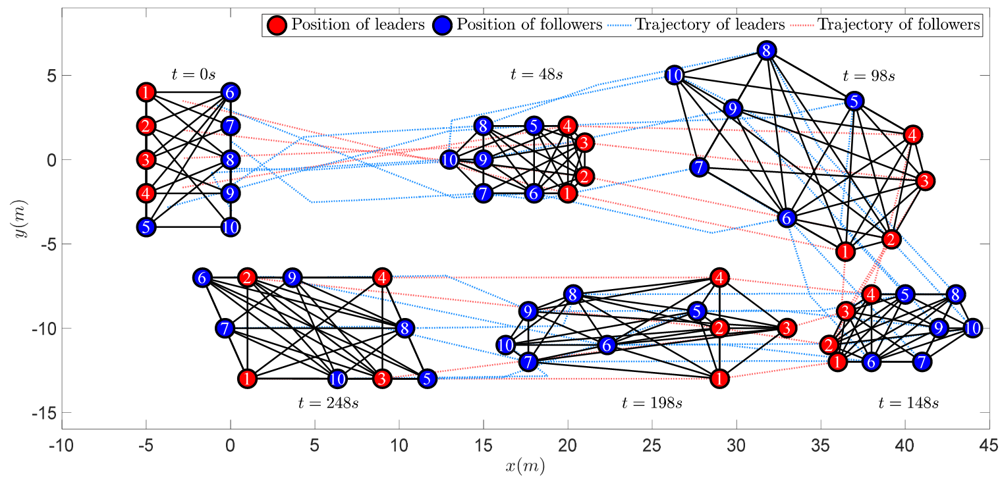
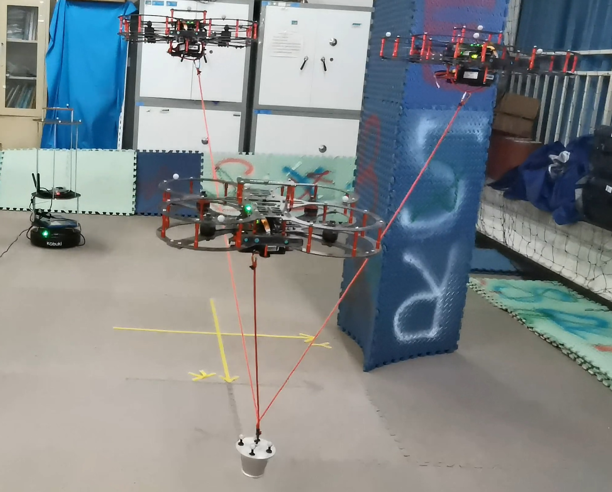
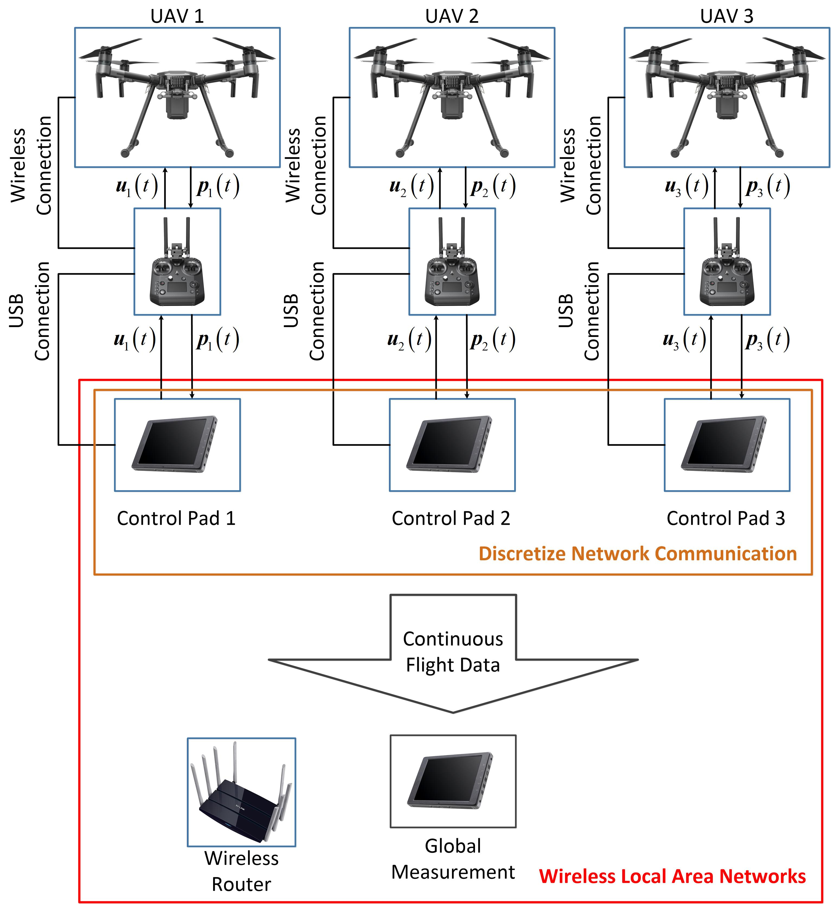
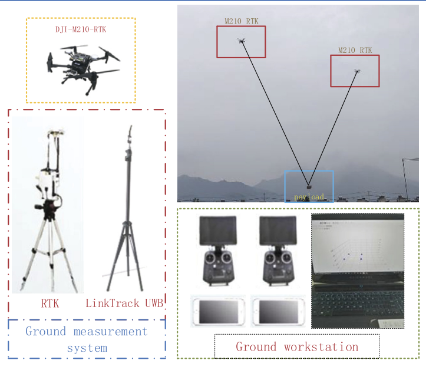
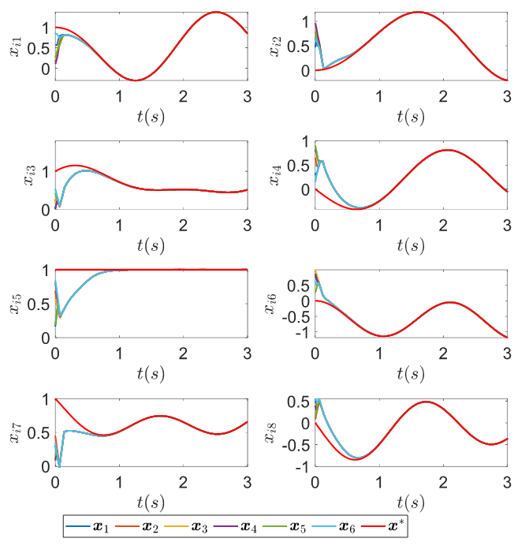
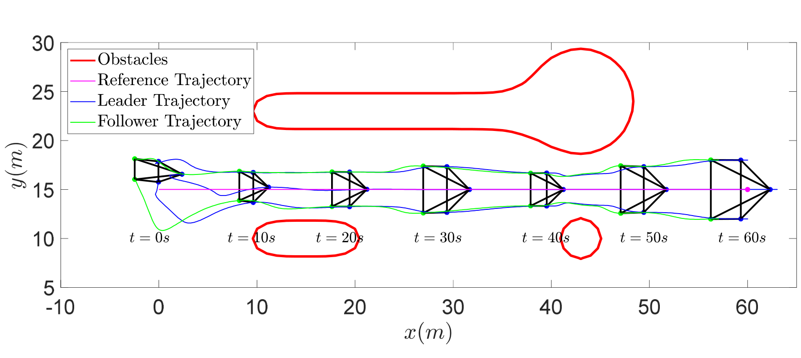
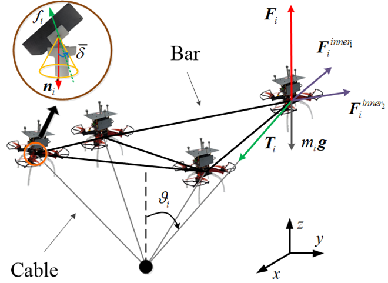
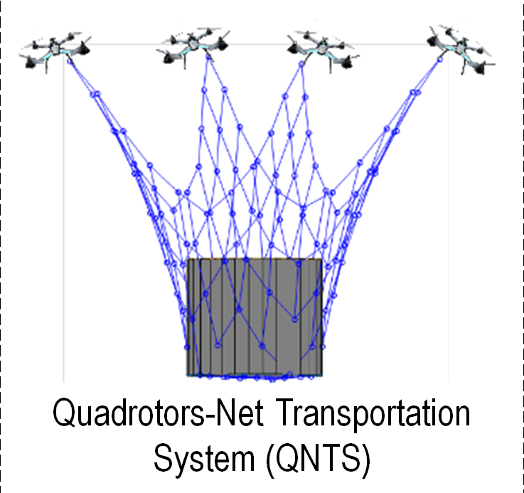

|
Xiaozhen Zhang Xiaozhen Zhang is currently studying for a doctorate at Beijing Institute of Technology (BIT), where he is supervised by Prof. Qingkai Yang. Before coming to BIT, he obtained his M.S. and B.E. degrees at Northwestern Polytechnical University. His research interests include swarm robotics, multi-agent systems, distributed parameter estimation, and cooperative aerial transportation. |
 |
Publications
 |
[6] Joint Estimation and
Planar Affine Formation Control with Displacement
Measurements We propose a displacement-based distributed estimator for identifying time-varying affine formation shape matrix. |
|
|  |
[5] Linear formation Control
of Multi-agents systems We propose a new distributed leader-follower control architecture, termed linear formation control. The objective is to navigate a group of agents to reach a specific target formation, which is a linear transformation of the pre-defined nominal configuration, whose dimension can be higher than agents’ coordinates. The proposed architecture enables the formation to adjust through arbitrary linear transformations to accommodate the environment, offering a diverse range of feasible formations. With a pre-defined stress matrix, it is proved that the proposed method is a general extension of affine formation control approaches. |
|
|
[4] Distributed Variation
Parameter Design for Dynamic Formation Maneuvers With
Bearing Constraints We introduce a framework for cooperatively designing the formation scaling and translation parameters in response to environmental excitations. Initially, excitations are input as disturbances to stable third-order integrator systems equipped with high-order shared control barrier functions, and the bounded local formation policies are output. Then, these signals will be input as the local reference to distributed average tracking filters, and finally output global formation policies with consensus. |
|
|  |
[3] Formation Planning for
Tethered Multirotor UAV Cooperative Transportation With
Unknown Payload and Cable Length For the tethered aerial transportation system with an unknown payload and cable length, we present a centralized formation optimization with the consideration of force distribution on the cables. Utilizing the admittance model, we transform the optimized position/force hybrid relationship into a unified desired position signal for multirotor UAVs. This allows us to simultaneously optimize both the internal tension and positions of UAVs. |
|
|

|
[2] Self-Triggered Based
Coordinate Control With Low Communication for Tethered
Multi-UAV Collaborative Transportation We present a cooperative path following control scheme for the tethered multi-UAV collaborative transportation system, where the self-triggered mechanism is developed to reduce communications during the synchronization of local mission times. |
|
|  |
[1] Analysis, planning and
control for cooperative transportation of tethered
multi-rotor UAVs We assess the robustness of the tethered aerial transportation system through an analysis of the wrench space and capacity margin. Using the insights gained from this analysis, we formulate an optimization process to derive the optimal configuration and trajectories. Subsequently, we develop an extended state observer-based feedback controller for precise trajectory tracking of the UAVs. |
Conference
|  |
[4] A Distributed Algorithm
for Solving A Time-Varying Linear Equation We achieve distributed solving of a time-varying linear equation by enforcing local solutions to track the manifolds corresponding to local linear sub-equations and reach the consensus simultaneously. |
|  |
[3] Distributed Decision
Making on Scaling Size for Obstacle Avoidance in Affine
Formation Control A simplified version of the paper "Distributed Variation Parameter Design for Dynamic Formation Maneuvers With Bearing Constraints". |
|  |
[2] Design and Analysis of
Truss Aerial Transportation System (TATS): The
Lightweight Bar Spherical Joint Mechanism We propose a new aerial transportation system, termed Truss Aerial Transportation System (TATS), which integrates the structural advantage of the truss and rigid frameworks. |
|
 |
[1] Distributed Control for
Cooperative Transportation in Presence of Unknown
Disturbance We propose a new cooperative aerial transportation system, termed Quadrotors-Net Transportation System (QNTS), which can be used to cope payloads with any shape, size, and number but limited total weight. |
Academic ServiceConference Reviewer: IROS2019, IROS2021, IROS2022, ACC2022, CDC2023, ICIT2024. Journal Reviewer: IEEE Transactions on Automation Science and Engineering, IEEE Transactions on Control Systems Technology, IEEE Transactions on Signal and Information Processing over Networks, Journal of Advanced Computational Intelligence and Intelligent Informatics, Discover Applied Sciences. |
| Last Update 08/26/2024. Thanks to Jon Barron. |